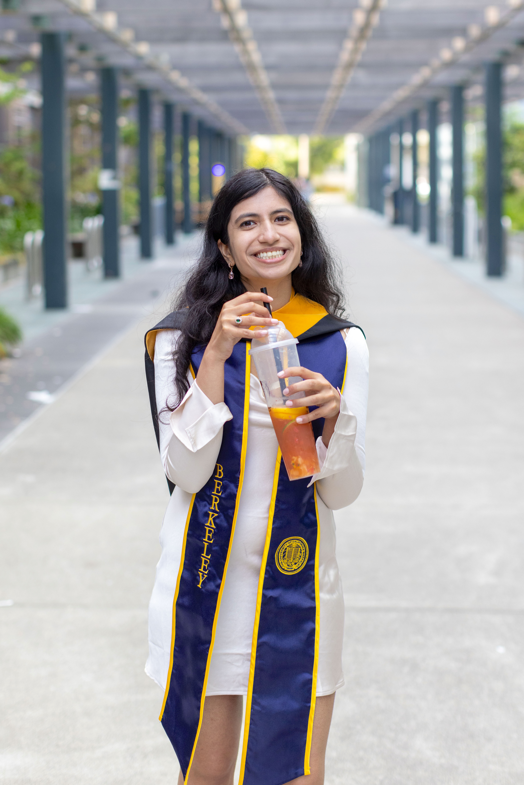
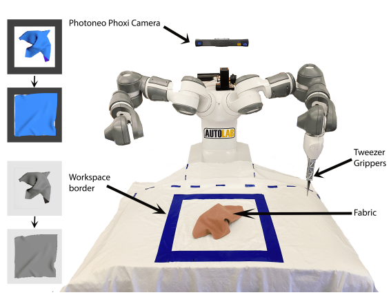
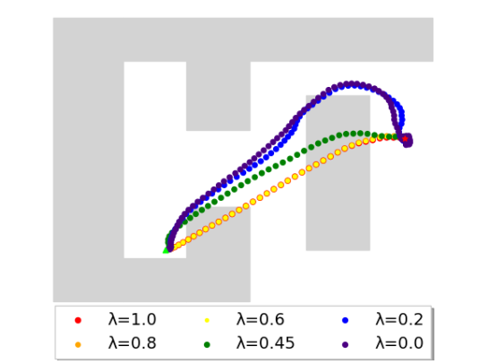
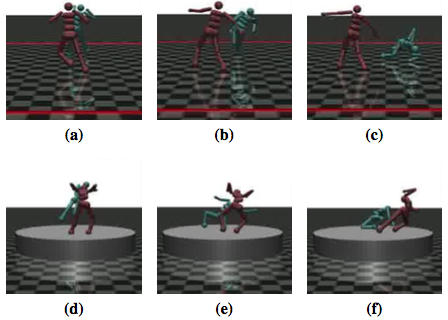
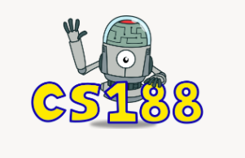

|
I am currently a Research Fellow at Stanford University with the RegLab advised by Professor Daniel Ho and Professor Becky Lester. Prior to Stanford, I graduated with an MS and BA from UC Berkeley in the Electrical Engineering & Computer Science department. In my time at Berkeley, I researched in the areas of robotics and imitation/reinforcement learning in the AUTOLAB, advised by Professor Ken Goldberg. I've also been fortunate to work under Professor Dawn Song on safety issues in reinforcement learning in the past. Email / Github / Google Scholar / CV |
 |
|
In general, I'm interested in imitation and reinforcement learning, AI safety, and human-AI interaction. I am also interested in societal impacts of AI. |
|  |
Satvik Sharma*, Ellen Novoseller*, Vainavi Viswanath, Zaynah Javed, Rishi Parikh, Ryan Hoque, Ashwin Balakrishna, Daniel S Brown, Ken Goldberg. International Conference on Automation Science and Engineering (CASE 2022) |
|  |
Zaynah Javed*, Daniel S. Brown*, Satvik Sharma, Jerry Zhu, Ashwin Balakrishna, Marek Petrik, Anca D. Dragan, Ken Goldberg. International Conference on Machine Learning (ICML 2021) |
|  |
Lun Wang, Zaynah Javed, Xian Wu, Wenbo Guo, Xinyu Xing, Dawn Song. International Joint Conference on Artificial Intelligence (IJCAI 2021) |
* = equal contribution
|
|
|  | Undergraduate Student Instructor, CS 188. Summer 2021 |

|
Course Tutor, Prob 140/Stat 140. Fall 2020, Spring 2021 |